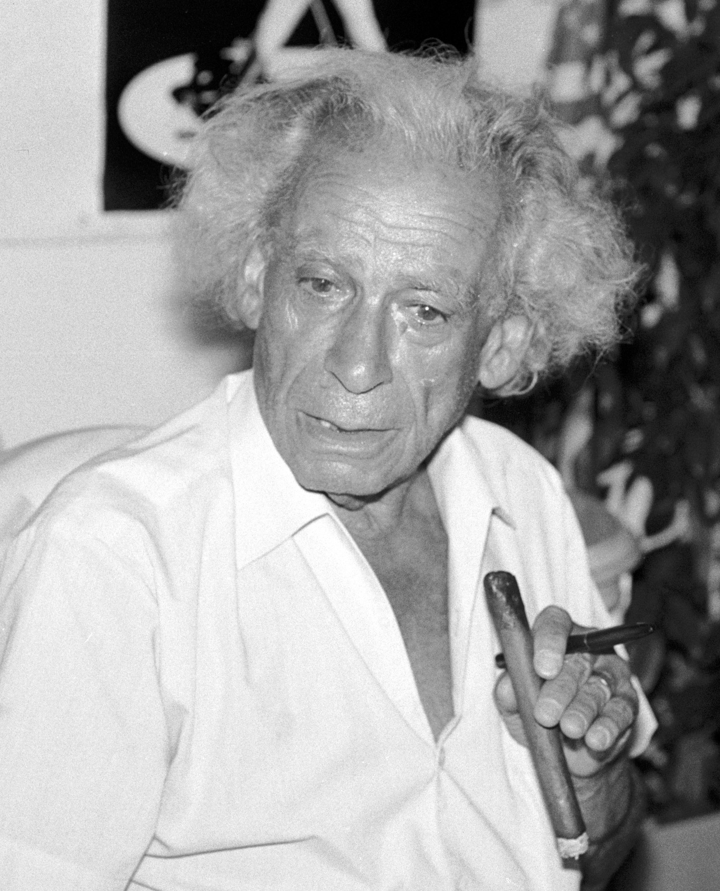

Samuel Fuller on being investigated by the Pentagon as a suspected communist in A Third Face: My Tale of Writing, Fighting, and Filmmaking.
During the Korean War, filmmakers in the United States produced a total of 28 movies about the war effort. Of these films, 23 productions had the direct involvement of the newly-formed Department of Defense.
This project highlights these 28 films: their themes, their messages, their relation to the war effort, and the influence from the DOD. This page presents side-by-side information about the production of these 28 films.
What Korean War films did Hollywood produce while the war effort was ongoing? How involved was the DOD in their productions? How should we comprehend the overall filmography between 1951 and 1953?
The Korean War is one of the least researched eras in the history of the relationship between Hollywood and the United States military, despite acting as a bridge between World War II and the broader Cold War. This site aims to explore this moment in history, elaborating on how the DOD intervened in Hollywood during the Korean War effort. This elaboration adds necessary context not just for how the relationship between Hollywood and the American military developed over time, but for how it functions today.